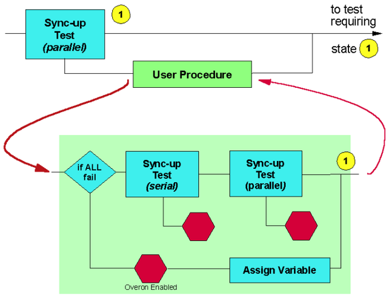

Match Loops for Syncing - Advanced Strategy
This strategy adds to the previous ones by separating which devices fail just the match loop condition, from those which fail in the vectors surrounding the match loop. The figure below shows the setup schematically.

The flow is similar to that illustrated in Match Loops for Syncing - Alternative Strategy, except that a user procedure is in the failing branch. If all sites fail, then there are two possibilities,
- All the devices failed in the vectors surrounding the match loop condition,
- One, more, or all the devices failed the match loop condition,
These sites are then subject to a sync-up test performed serially (with any failing devices being binned) and then in parallel (again binning failing devices).
If not all devices fail, then one or more of the sites must have failed in the vectors surrounding the match loop. As such, the site can be located and binned - with Overon Enabled active (so that the other sites are not affected) - and allocated a variable (optional).
Functional changes
- Introduced before SmarTest 6.3.2